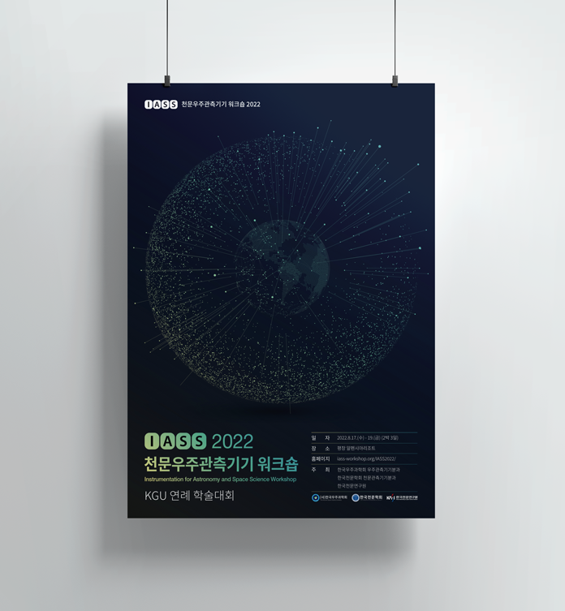
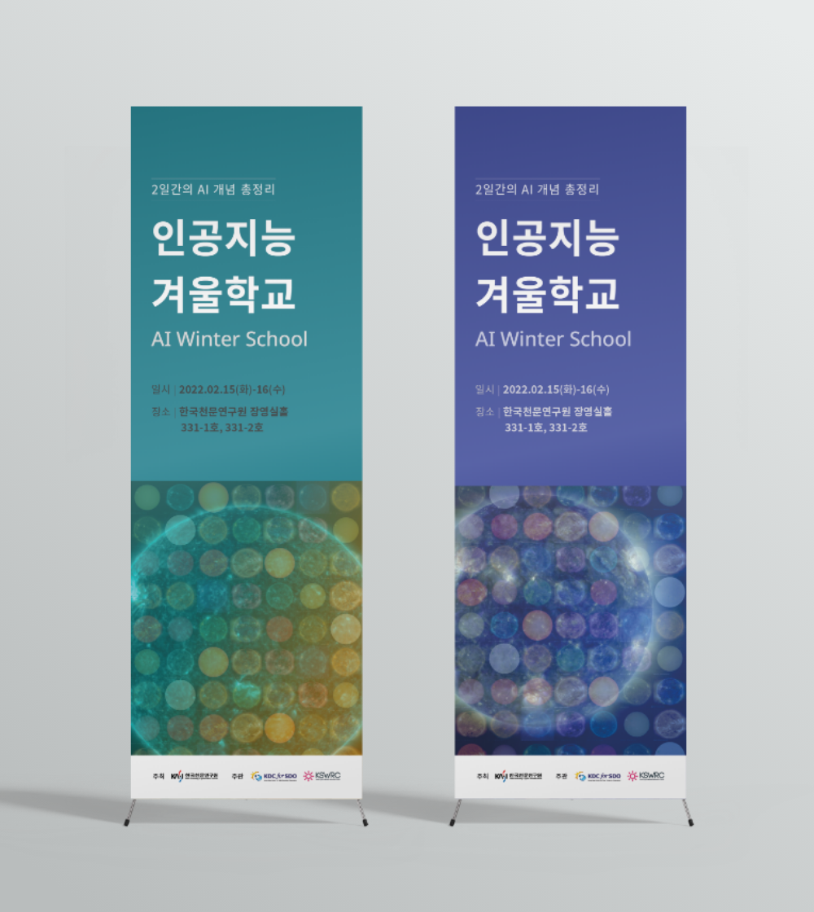

EVENT SERVICE
행사 지원
원활한 행사 진행을 위한
행사관련 토탈서비스
위즈랩은 클라이언트의 요구에 맞는 다양한 행사관련 서비스를 제공합니다. 행사 기획, 홍보물 제작, 홈페이지 제작, 참여 신청, 참석자 명단 관리, 프로그램 준비와 같은 사전 준비부터 부스 세팅, 현수막 설치, 음향 및 촬영 장비 설치, 영상 및 사진 촬영, 행사 진행 등 당일 행사 지원, 그리고 영상 편집, 결과보고서 작성, 행사자료 아카이빙 등 행사 이후의 서비스를 제공합니다.
행사 기획
홈페이지
제작
제작
홍보물
제작
제작
음향 장비
설치
설치
행사 사진
촬영
촬영
...
행사의 아이덴티티를 만드는
다양한 디자인 워크
행사에서 좋은 프로그램만큼이나 중요한 것은 포스터, 안내 책자, 현수막, 배너, 웹사이트 등 다양한 디자인 작업물입니다. 특히 행사에 대한 정보를 처음 접하게 되는 포스터나 웹사이트는 행사의 얼굴이 됩니다. 위즈랩은 오래도록 좋은 기억으로 남는 행사를 만들기 위해 노력합니다.
포스터
현수막
브로슈어
리플렛
배너
영상편집
...

